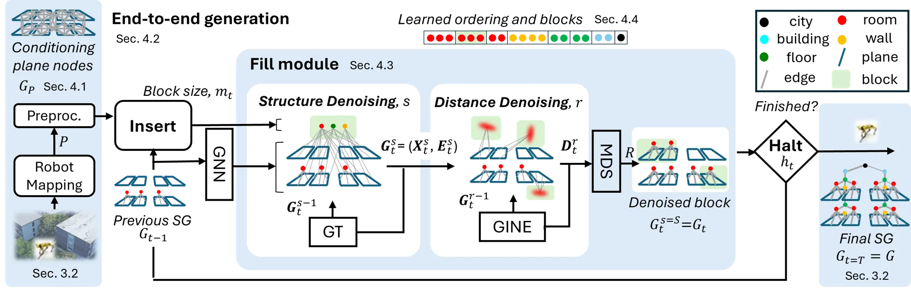
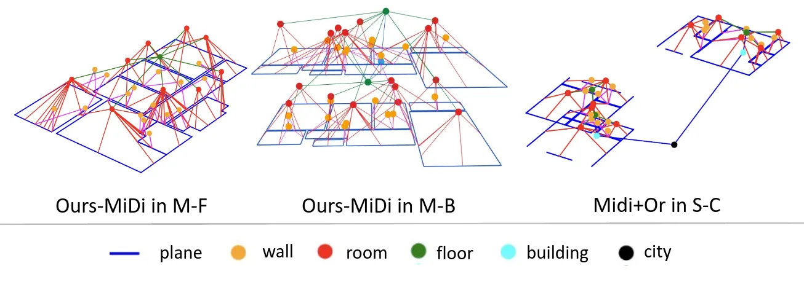
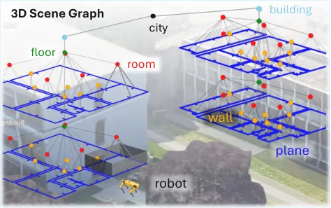

通过自回归扩散生成三维场景图高层概念
Generation of High-Level Concepts in 3D Scene Graphs via Autoregressive Diffusion
把底层平面观测提升为可生成的多层空间语义图，是从几何建图走向空间推理的直接桥接。
作者、单位与技术谱系 · Research context
作者与单位
研究脉络
合作网络
- University of Luxembourg / University of Padova / Fondazione Bruno Kessler论文作者 → 3DSG generation关系：论文署名跨单位[作者单位]
- S-Graphs+机器人观测平面图 → 3DSG generation关系：明确技术依赖[问题定义与数据集]
公开网络只记录共同署名和论文明确的技术依赖；匿名代码/数据链接不被扩展解释为已确认合作。
方法本质拆解 · What actually changed
训练
模型在 60% 训练、20% 验证、20% 测试划分上学习从完整图反向恢复被移除的高层节点。为减轻 teacher-forcing 与推理分布差异，训练时对非保护节点注入标签替换、坐标 Gaussian noise、删边和加边噪声。
约束
输入平面由欧氏质心近邻构图，生成过程按 plane→wall→room→floor→building→city 的 bottom-up 层级依赖组织。D4 以新边距离和 MDS 约束质心，MiDi 以 conditioning graph 的中心化坐标处理 SE(3) 变化。
推理
FLAGG 在每一步先预测新增节点数，再生成边、标签和质心，最后由 Halting model 决定是否继续。推理阶段起点是机器人观测 plane graph，终点是移除初始 proximity edges 后的完整层级图，不需要预先知道最终图大小。
机制
核心机制是把高层概念生成写成条件图生长，而不是为房间、楼层等每种概念分别训练规则。联合结构、语义和质心使生成结果能跨层级扩展，但也让错误平面、错误边和层级先验可能共同传播。
输入带质心的平面图，按层级自回归插入高层节点并联合扩散边、标签和位置，再用 FGW 检验结构—语义—几何是否一致。

桥接价值Bridge
桥接价值
论文把可靠几何估计产生的平面节点转成墙、房间、楼层、建筑和城市等高层概念，直接服务空间推理、全局定位和路径规划。相比把场景图当作静态后处理，它学习在已有观测图上增量生成结构、语义和质心。
方法与模块Method
方法摘要
输入是由平面及其近邻边组成的 plane graph，FLAGG 的 Insertion、Fill 和 Halting 模块反复添加节点块，直到停止。Fill 可选 factorized D4 或 adapted MiDi：前者生成拓扑与边距离后用 MDS 恢复质心，后者在居中的坐标系中联合扩散标签、边和坐标。
可迁移模块
最值得迁移的是 bottom-up hierarchical ordering、teacher-forcing exposure-bias 噪声增强，以及把节点语义和几何位置放进同一个生成步骤。FGW 将 Wasserstein 的节点语义/质心匹配与 Gromov-Wasserstein 的拓扑匹配结合，可作为场景图或对象地图的结构化验证指标。

证据Evidence
关键证据与数字
数据集由 synthetic、MSD architectural floor plans 和 robot-recorded real environments 三类来源构成，共 9 个子集；例如 S-C 有 3,000 个样本、平均 110 个节点和 518 条边，M-C 有 1,084 个样本、223 个节点和 1,303 条边，R-C 为 1 个真实测试环境、172 个节点和 954 条边。实验按 60%/20%/20% 划分训练/验证/测试并运行 3 个随机种子；在 M-F 上 Ours-MiDi 相比 EC-L 将 FGW 降低 65%，在 M-C 上 Ours-FD4 相比 Rand 降低 73%，在 R-F 上 Ours-FD4 比 EC-L 降低 41%，数字来自官方 HTML 表 1、3、4。
边界与下一步Limits & Next Step
边界与风险
方法依赖底层 plane graph 的几何质量和层级构造规则，真实数据中的 R-B/R-C 样本极少，不能等同于大规模在线泛化。作者指出自回归模型会产生 exposure bias、复杂度增长和误边；MiDi+Or 获得真实图大小这一 oracle 信息，因此它不是公平的可部署基线。
下一步实验
可将平面节点的协方差、回环一致性和语义置信度作为生成条件，测试几何不确定性是否会在房间/楼层层级被放大。下一步还应在真实连续探索序列中测量图更新延迟、错误高层节点的回滚代价，以及生成场景图对全局定位和路径规划的实际收益。
{kind=link}
